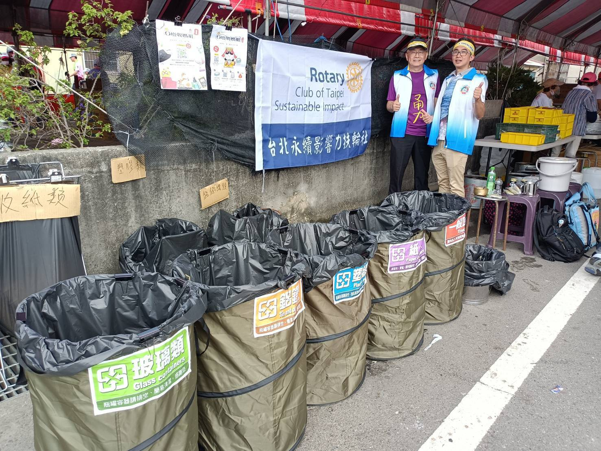
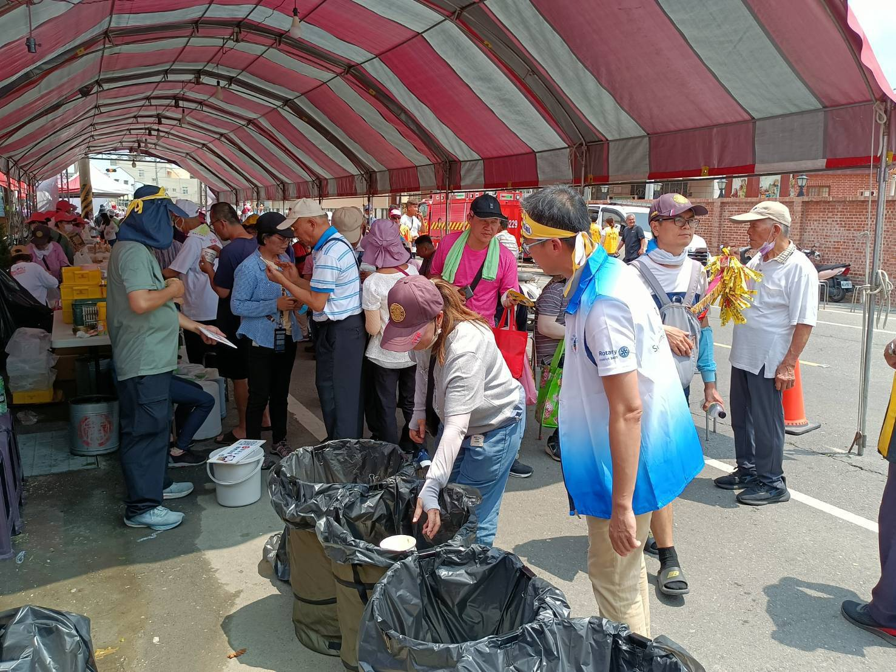

Zero-Waste Tribute to Mazu
"Zero-Waste Tribute to Mazu" is one of the service projects driven by the Club. On April 20, 2026, the Club carried out a formal waste-sorting and recycling demonstration and results count at the largest refreshment station in front of Fengtian Temple in Xingang. Using paper bowls as the main basis for estimation, and converting by the weight of every 30 items of each recyclable category, we compiled quantitative results covering more than 2,800 instances of people collecting food and participating in waste sorting.






This refreshment station sits along the unavoidable route to Fengtian Temple and is one of the largest food-collection points. With dense foot traffic, the recycling volume is therefore highly informative as a reference. What the Club did here, beyond separating the waste, was to record the sorting results in a trackable way, so that on-the-ground service can be seen, compared, and continued.
From the statistical results, the number of people bringing their own utensils to collect food was still small, indicating that there is room for work in promoting the habit. However, because there were concrete recycling actions and clear records of results, the team on the ground also received praise from the local volunteer group, and the organizer proactively added our Line account, inviting the Club back to assist again next year.
The value of this case lies in turning a short, high-traffic service into an impact sample that can be explained, counted, and shared externally. For the Club, this is precisely the on-the-ground evidence that the report aims to preserve.
Summary of Core Figures
Three figures: first look at the results, then read on for the structure.
Weight Comparison of Six Recyclable Categories
Each bar width is converted with 70.47 kg as 100%. Recyclable categories are shown in soft gold and muted green; general waste is distinguished in warm gray.
Share of Recyclable vs. General Waste
Recyclable and reusable, including food waste: 123.75 kg, accounting for 63.7%. General waste: 70.47 kg, accounting for 36.3%.
On-site statistics from the Xingang case, April 20, 2026